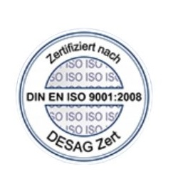
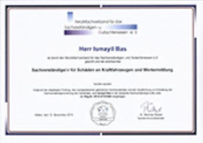
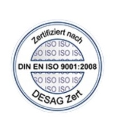
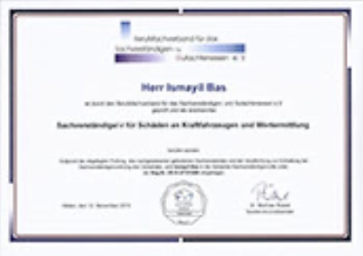

Über mich
Mein Name ist Ismayil Bas, und ich bin seit über 10 Jahren als zertifizierter KFZ-Gutachter tätig. Mit Sitz in Ingolstadt stehe ich Privatpersonen, Werkstätten und Anwälten als unabhängiger Ansprechpartner zur Seite, wenn es um professionelle Gutachten, Fahrzeugbewertungen und die zuverlässige Abwicklung von Unfallschäden geht.
Durch meine langjährige Erfahrung kenne ich nicht nur die technischen Details verschiedenster Fahrzeugtypen, sondern auch die Abläufe bei Versicherungen und rechtlichen Verfahren. Ich arbeite mit äußerster Präzision, Transparenz und Fairness – denn mein Ziel ist es, Ihnen in einer oft stressigen Situation Sicherheit und Klarheit zu geben.
Vertrauen Sie auf Kompetenz, Schnelligkeit und persönliche Betreuung – dafür stehe ich mit meinem Namen: Gutachter BAS.

 


